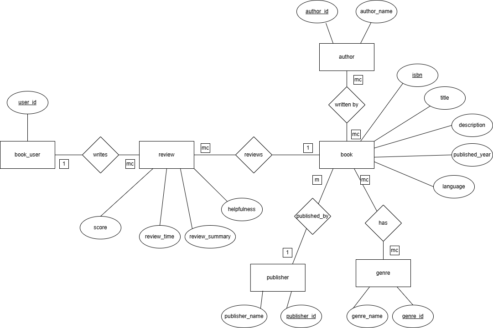
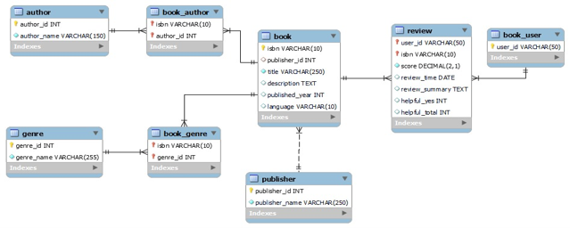

PROJECT OVERVIEW
A data foundation built for trust and reuse
I designed an ELT pipeline that integrates book ratings and metadata from three structurally different datasets into a normalized MySQL database. The resulting data foundation supports traceable transformation, relational integrity, and a parameterized collaborative-filtering workload served to BI.
My contribution
Data modeling, ingestion, validation, transformation, and query optimization
Core stack
MySQL · SQL · Relational modeling · Data quality
Downstream use
Analytical queries, recommendation workloads, and BI tools
ARCHITECTURE
A layered ELT architecture
Raw values are preserved before any irreversible transformation. Each later layer has a narrow responsibility, making failures easier to diagnose and the complete pipeline easier to rerun.
Staging
Preserve raw strings, source files, and ingestion run IDs.
Validation
Classify accepted and rejected records with explicit reasons.
Core
Apply normalized entities, keys, constraints, and deduplication rules.
Serving
Expose reusable views for analysis and representative workloads.
Operations
Track load status, row counts, failures, and reconciliation results.
DATA PROFILE
2.8 million source records loaded into staging
| Source | Purpose | Staging records |
|---|---|---|
| Amazon ratings | User–book interactions | 2,397,595 |
| Amazon books | Title and product metadata | 171,126 |
| Book-Crossing | Additional publication metadata | 270,170 |
| Total | 2,838,891 | |
Raw datasets are not included in the public repository because of size and redistribution considerations. The pipeline is documented through file contracts, loading SQL, validation rules, and execution instructions.
THREE CORE CHALLENGES
Turning inconsistent source data into explainable database decisions
Challenge 01 · Identity
ISBN, ASIN, and title-based mappings could not be joined safely
The ratings identifier column mixed ISBN-10 and Amazon ASIN values, while Amazon metadata lacked a reliable book identifier and depended on titles.
Solution
I separated identifier schemes, validated ISBN-10 checksums, preserved unsupported ASIN records with a reason code, and accepted title mappings only when one title resolved to exactly one ISBN.
- 1,228,886 ASIN ratings retained in staging
- 1,168,709 ISBN-10 ratings identified
- Ambiguous and unmatched titles recorded explicitly
Challenge 02 · Data quality
Invalid rows needed to be traceable, not silently deleted
Dates, scores, identifiers, helpfulness values, and duplicate user–book ratings required different validation and rejection policies.
Solution
Raw values remain in staging. Required-field failures are routed to rejected records, optional invalid values become NULL, and every load records accepted, rejected, and reconciled counts.
- Deterministic latest-rating deduplication
- Ingestion audit records and reason codes
- Row-count and orphan-key reconciliation checks
Challenge 03 · Relational design
Repeated and multi-value metadata did not belong in one book row
Authors, publishers, and comma-separated genres introduced repeated values, inconsistent naming, and difficult filtering.
Solution
I separated core entities and modeled many-to-many relationships through mapping tables, then applied primary keys, foreign keys, uniqueness rules, and domain constraints.
- Book, Reader, Rating, Author, Publisher, and Genre
- Book–Author and Book–Genre mapping tables
- 3NF-oriented production schema
RELATIONAL CORE
Entities reflect business meaning and relationship cardinality
The conceptual model establishes entity boundaries and cardinalities before they are translated into keys, constraints, and junction tables in MySQL.


The diagrams document the original design. The public implementation clarifies book_user and review as reader and rating, introduces a surrogate book_id while retaining a unique ISBN-10 edition key, and extends the core with staging, audit, rejection, and serving structures.
ENGINEERING EVIDENCE
Validation is part of the deliverable
Validation evidence
- Ordered migrations run from an empty MySQL database
- All three source files load into staging
- Staging counts match the source CSV row counts
- ISBN-10 validation handles valid and invalid inputs
- ISBN and ASIN distributions are profiled
- CRLF-aware bulk loading is verified
Book-Crossing identifier check
- Valid ISBN-10
- 270,053
- Invalid or unsupported
- 117
- ISBN-13 within unsupported
- 3
QUERY OPTIMIZATION
Eliminating repeated genre aggregation from the query path
The representative workload finds books rated highly by readers who also liked a selected title. EXPLAIN ANALYZE showed that the dominant bottleneck was not the recommendation logic itself: the genre view was being materialized again for every request.
Query path Selected title → positive readers → co-rated titles → distinct-reader ranking → genre lookup
Before
12.9 s
Runtime genre-view aggregation
After
2.8 s
Indexed pre-aggregated lookup
78%
shorter execution time
Diagnose the actual bottleneck
EXPLAIN ANALYZE exposed repeated materialization of v_canonical_book_genre, which processed more than 130,000 rows during each recommendation request.
Move repeated work out of runtime
Because MySQL has no native materialized views, I stored the genre aggregation in the physical table mv_canonical_book_genre and indexed its canonical_title lookup.
Isolate and verify the improvement
The recommendation logic and result semantics stayed unchanged. Only the genre-serving layer was replaced, so the measured runtime difference isolates the effect of pre-aggregation.
Supporting choices in the final query
| Technique | Implementation | Purpose |
|---|---|---|
| Two-way indexing | (isbn, score, user_id) and (user_id, score, isbn) |
Support both seed-reader lookup and candidate-book expansion. |
| Early filtering | Apply score >= 4.0 when selecting readers and candidates. |
Reduce rows before the joins and aggregation stages. |
| Edition consolidation | Group cleaned titles by canonical_title. |
Return one recommendation when several ISBNs represent the same book. |
| Correct counting | Use COUNT(DISTINCT user_id). |
Prevent multiple editions or metadata joins from inflating co-occurrence. |
Benchmark scope: the before-and-after comparison changes only the genre aggregation layer. The pre-aggregated table must be refreshed when its underlying book or genre data changes—an explicit maintenance trade-off for removing repeated work from the interactive query path.
SOURCE & REPRODUCTION PATH
Inspect the implementation, not just the outcome
The public repository exposes the ordered SQL path used to create the schema, stage local source files, refresh the normalized core in a transaction, and inspect data-quality results. This keeps the engineering decisions reviewable even though the full source snapshots cannot be redistributed.
Open the GitHub repository-
01
Build the database
Apply versioned MySQL 8.4 migrations in filename order from an empty database.
-
02
Stage source files
Follow the documented CSV contracts and load raw values with source provenance.
-
03
Refresh the core
Run the transaction-based transformation that validates, classifies, deduplicates, and rebuilds the core tables.
-
04
Verify the result
Inspect orphan-key, domain, reconciliation, rejection-profile, and metadata-coverage checks before running the analytical workload.